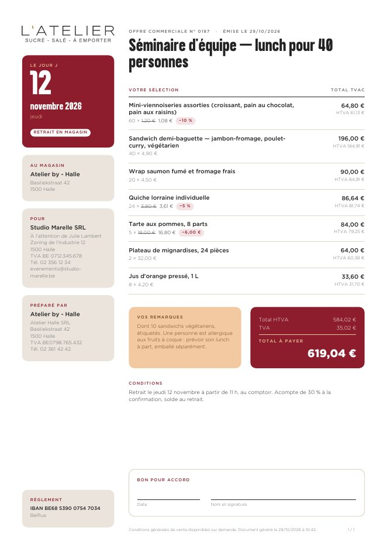
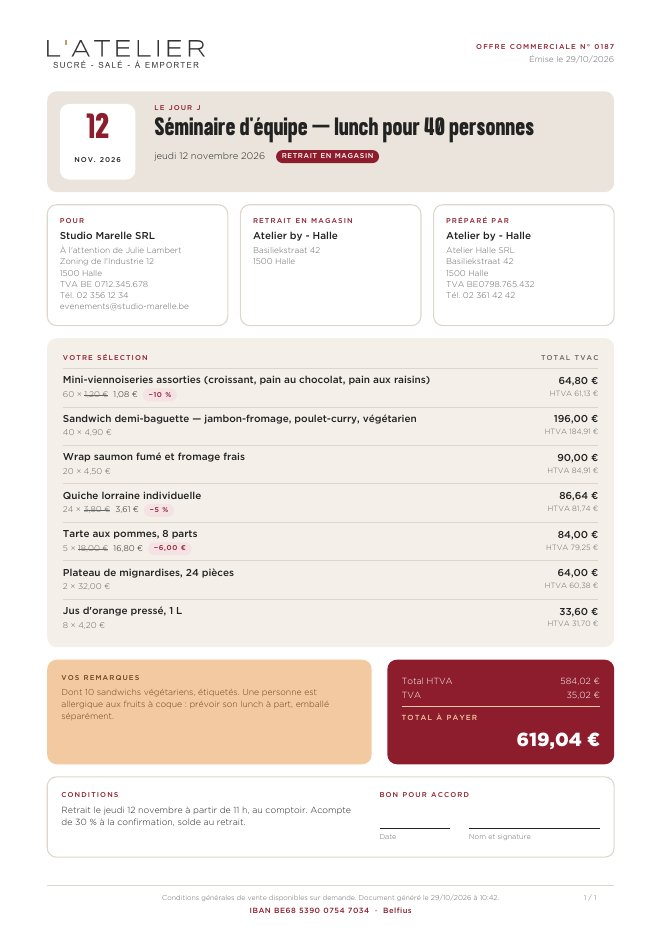
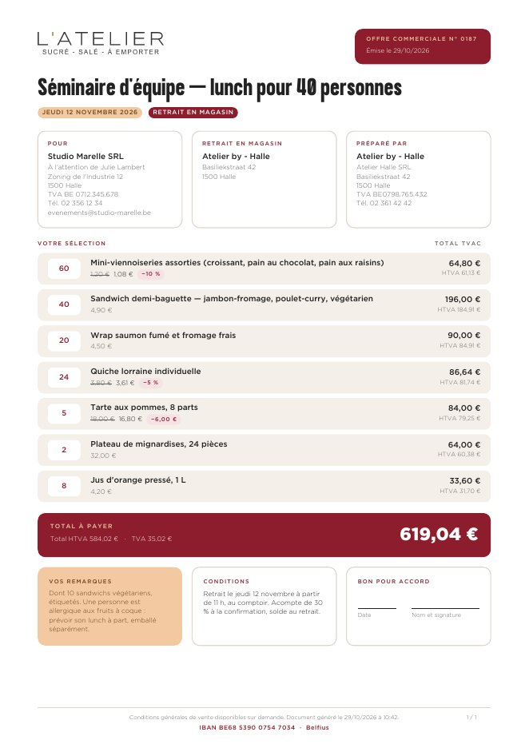
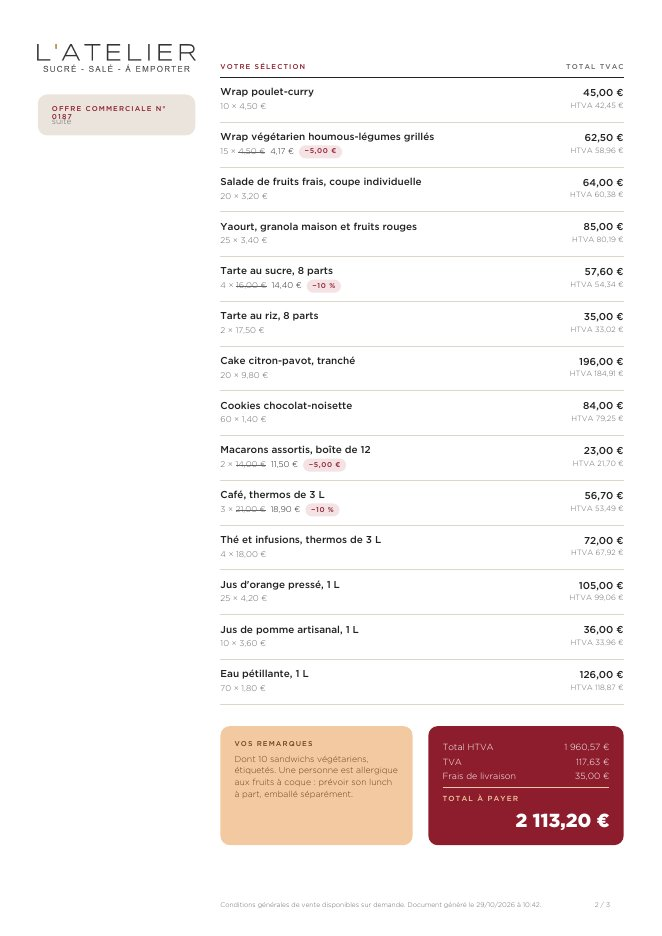
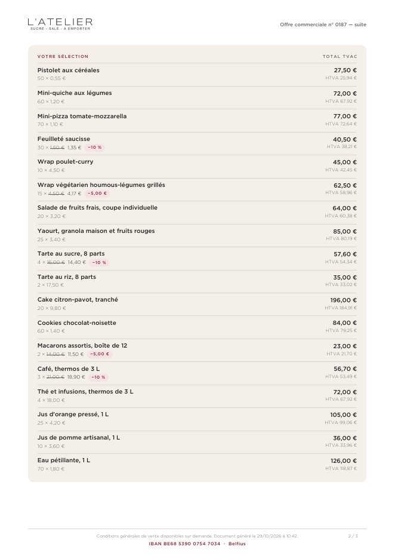
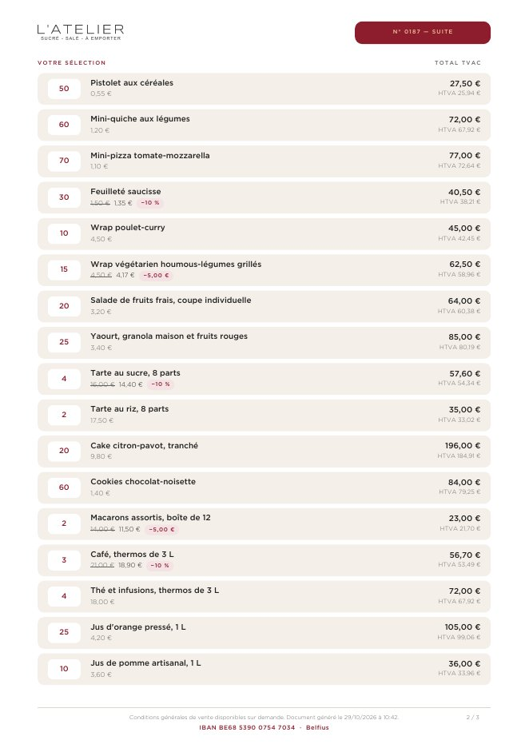

C — Carnet d’événement, en trois versions plus simples
Même idée — l’offre racontée depuis l’événement du client —, moins d’effets : ni ligne manuscrite, ni pointillés, ni aplat pleine hauteur. Tout se range dans des rectangles aux coins arrondis (rayon 3 mm). Les trois portent les mêmes éléments : le jour J, le client, le lieu, le magasin, la sélection (quantité × prix barré puis remisé, remise en pastille, TVAC et HTVA), la remarque du client, le total à payer livraison comprise, le bon pour accord. Rendues par TCPDF, sur la même offre illustrée que A et B ; chacune tient sur une page.

C1 Le volet en cartes
À gauche une pile de cartes : le jour J en rubis, l’adresse de livraison, le client, le magasin, le règlement. À droite la sélection en lignes simples, la remarque et le total côte à côte, les conditions, le bon pour accord.
Ce que ça apporte
- La plus proche de la première version de C, sans l’aplat beige.
- La date se repère d’abord ; l’IBAN a sa carte, en bas à gauche.
- De la marge sur la page : la plus tolérante aux remarques et conditions longues.
Limites
- Colonne de droite plus étroite : les noms longs passent sur deux lignes.
- Les cartes de gauche ne servent qu’en page 1.

C2 Une colonne
Une grande carte beige : la date dans une tuile blanche, le titre, le jour et le mode. Trois cartes (client, livraison, magasin), la sélection dans une seule carte, la remarque et le total, puis conditions et bon pour accord dans une dernière carte.
Ce que ça apporte
- Se lit de haut en bas, dans l’ordre des questions du client : quand, pour qui, où, quoi, combien.
- Pleine largeur : les noms de produits tiennent sur une ligne.
Limites
- La plus juste en hauteur : dès 8 produits environ, la dernière carte passe en page 2.
- Beaucoup de beige : la page paraît plus chargée que C1 et C3.

C3 Une carte par produit
Le titre, puis la date et le mode en pastilles ; trois cartes ; chaque produit dans sa carte, la quantité dans une pastille blanche ; le total sur une bande rubis ; remarque, conditions et bon pour accord en trois cartes.
Ce que ça apporte
- La plus lisible ligne à ligne : la quantité saute aux yeux.
- Le total à payer se voit d’un coup d’œil ; le numéro d’offre dans un badge rubis.
- Blanc et aéré : en haut et en bas, les cartes ne sont que des contours.
Limites
- Un rectangle par produit : une offre de 30 lignes empile beaucoup de cartes.
- Remarque et conditions dans des colonnes étroites.





